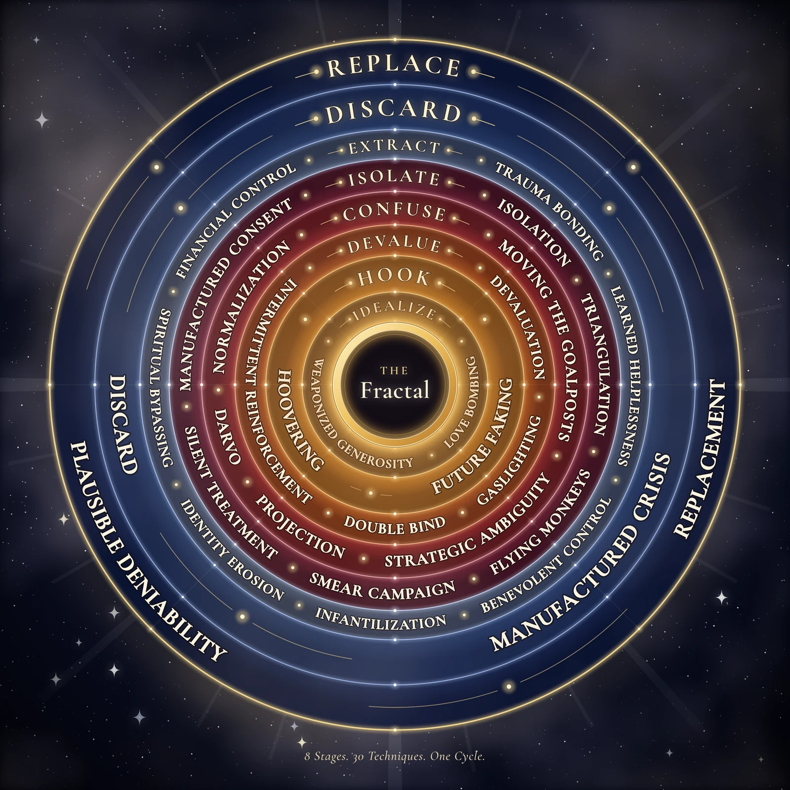

One pattern, seen in every part of life: what it is, how to read it whatever you believe, and what I hope it can do for people.
| 1 | The short version: why these books exist |
| 2 | What I built, in numbers |
| 3 | Three ways to read this, whatever you believe |
| 4 | The eight-stage cycle and what each stage counterfeits |
| 5 | The thirty techniques and the real needs they imitate |
| 6 | The thirty sectors: our relationship with every need |
| 7 | The fractal: one pattern at three levels |
| 8 | The combinations: why order matters, and how they help people |
| 9 | The three fractals of making change |
| 10 | The cage and the intent: accountability without shame |
| 11 | What this means for children and schools |
| 12 | The end vision |
| 13 | What this is and is not: honest limits |
I started by documenting one thing: the cycle people describe when they leave a manipulative relationship. Idealize, hook, devalue, confuse, isolate, extract, discard, replace. Then I kept finding the same cycle in places that had nothing to do with romance.
I found it in schools, hospitals, workplaces, churches, housing, food, media, immigration and prisons. The same eight stages. The same set of techniques. The same order. I wrote one sector at a time, thirty of them, and by the end I was not looking at thirty separate problems. I was looking at one pattern wearing thirty costumes.
Here is the core idea, in one sentence: every human need was meant to be met, and a pattern has learned to stand between people and their needs, imitate the real thing, and charge for access. The original says "you are loved." The copy says "you are loved, when you perform." The whole project lives in that added condition.
I wrote it for three reasons:
The work grew in three layers. Each one answers a different question.
| Layer | What it is | The question it answers |
|---|---|---|
| The Fractal (original series) | 30 sectors, each walked through the 8 stages and 30 techniques at 3 levels of scale. | Where does the pattern run? Everywhere, and the repetition across sectors is the evidence. |
| Fractal² (the full map) | Each sector expanded to 300+ specific tactics at three levels, so a reader can find the exact thing that was done to them. | What exactly happens, at full resolution? |
| The Combinations | 100+ per sector. Each shows how single techniques chain into a compound pattern, why the order matters, and how to break it. | How does it work on a person, and how do you get out? |
| The Sacred Divide | 34 religious traditions, each examined in the same 27 sections. | How have the world's traditions named the counterfeit, and where do they disagree? |
My own lens is spiritual. I see this pattern as a counterfeit of something sacred. But the framework does not depend on my faith. You can swap "divine design" for "basic human need" and every chart in this document still holds.
The "false god" is not a being. It is the pattern itself. It cannot create, only imitate. It wears the face of the real thing ("an angel of light") and puts a gatekeeper between people and what they were made for.
The cycle is the coercive-control cycle that clinicians describe in abusive relationships: idealization, intermittent reward, devaluation, confusion, isolation, dependency. The same mechanics show up in groups and organizations.
No villain is needed. Wherever there is a real need, a power gap and a gatekeeper, the same incentives produce the same cycle: warmth to recruit, conditions to retain, extraction, then replacement.
All three readings agree on four things:
When I compared traditions, I found that many of them have a name for something that imitates or hides what is real. They disagree about what lies underneath: God, a true self, or no fixed self at all. I don't claim they all say the same thing. What they share is narrower: something imitates or hides the real, and freedom begins with seeing it.
| Tradition | Its word or image | What it points to |
|---|---|---|
| Christianity | The counterfeit; "an angel of light" (2 Cor 11:14) | Deception that looks like the good thing it replaces |
| Islam | Nafs (the grasping self); ghafla (heedlessness) | Forgetfulness of what is real; appetite steering the person |
| Buddhism | Avidyā (not-seeing) | Suffering held in place by misperception, ended by clear seeing |
| Vedantic Hinduism | Māyā | An appearance taken for reality |
| Indigenous (Algonquian) | Wetiko | A spirit or "sickness" of consuming others, spreading person to person |
| Gnostic | The Archons | Powers that keep people asleep to their origin |
| Secular | Conditioning; incentive structures | Learned patterns that run without anyone choosing them |
My invitation to every reader is the same one I give in the series: whatever tradition you carry, or don't carry, bring it with you. If what I describe is real, your own framework will recognize it.
Each stage is the exact reverse of a real need being met. That precision is why the pattern is so hard to see: it looks like the real thing until the condition appears.
| Stage | What happens | The real human need (any reader) | The spiritual principle | The inversion |
|---|---|---|---|---|
| 1. Idealize | Warmth aimed at your specific hunger | To be seen and chosen | Election: chosen before performing | "You're special," to secure your investment |
| 2. Hook | You invest time, money, identity, trust | Secure commitment | Covenant: unbreakable from the source's side | Sunk cost dressed as loyalty: leaving costs more than staying |
| 3. Devalue | Warmth becomes conditional | Worth that doesn't have to be earned | Inherent worth: "fearfully and wonderfully made" | Worth handed to the system's metrics: grades, scores, reviews |
| 4. Confuse | You doubt your own perception | Trust in what you see and feel | Truth and discernment: the still, small voice | Gaslighting: the inner compass broken |
| 5. Isolate | Outside perspectives fall away | Connection; people who witness your life | Community: "not good to be alone" | Witnesses removed so nobody can compare notes |
| 6. Extract | Energy, money, health, identity taken | Fair exchange; enough | Abundance: "my cup runneth over" | Taking from people who can't afford to give |
| 7. Discard | Dropped when depleted | Someone who stays | Unfailing presence: "I am with you always" | A form letter, a deactivated badge |
| 8. Replace | The seat is filled immediately | To be irreplaceable | Known by name: the shepherd leaves the 99 for the 1 | Proof that every earlier stage was mechanical |
Read the Garden of Eden, as history or as myth, and all eight stages appear in order. The serpent promises ("you will be like God"), hooks with a future ("your eyes will be opened"), and the first result is shame ("they knew they were naked"). Blame splits the relationships three ways, labour becomes extraction, they are expelled, and a flaming sword guards the way back. One detail stands out: the serpent's first words are "Did God really say...?" Confusion came first. A person who trusts their own perception cannot be idealized.
| Stage | The question to ask in any new job, group, relationship or program |
|---|---|
| Idealize | Is this warmth unconditional, or is it aimed at my specific hunger? |
| Hook | What am I being asked to invest: time, money, identity, data, trust? |
| Devalue | Has the warmth become conditional? Am I being told I'm not enough? |
| Confuse | Am I doubting my own perception? Is the information contradictory? |
| Isolate | Am I losing outside perspectives? Are my other connections discouraged? |
| Extract | What is being taken: energy, money, time, health, identity, creativity? |
| Discard | Am I being treated as disposable? |
| Replace | Is the same cycle already running on someone new? |
If you can tell which stage you're in, the pattern can't run without you noticing, and running unnoticed is the only way it works.
If the eight stages are what the pattern is, the thirty techniques are what it does. Every one is a corrupted copy of something good. Each also has a counter-practice anyone can learn.
| Technique | The real thing it imitates | The counter-practice |
|---|---|---|
| Seduction: drawing you in | ||
| Love bombing | Unconditional love | Slow down. Real love doesn't need to rush; judge over months, not moments. |
| Weaponized generosity | Generosity | Track the ledger. A gift later used as an obligation was a transaction. |
| Future faking | Hope; an honest promise† | Ask what has been delivered, not promised. Compare the brochure to the receipt. |
| Hoovering | Reconciliation and repair† | When they reach back out, ask what has actually changed besides the words. |
| Destabilization: breaking your footing | ||
| Gaslighting | Genuine knowing | Keep a written record. Your body is a record too: if it tensed, something happened. |
| Moving the goalposts | Fair standards; the ability to arrive† | Write down your own goalposts so you can see theirs move. |
| Double bind | Real choice† | Name it: "Both options serve the system." Look for the third option. |
| Strategic ambiguity | Honest communication | Ask for specifics, in writing. Ambiguity dissolves under direct questions. |
| Intermittent reinforcement | Stability | Name the variable reward. Naming brings an unconscious pull into awareness. |
| Projection | Honest self-reflection† | Ask: is this accusation truer of the accuser than of me? |
| DARVO (deny, attack, reverse victim and offender) | Justice | Keep the timeline. Who harmed whom first? |
| Normalization | Healthy shared custom† | The newcomer's question: would someone seeing this for the first time find it acceptable? |
| Isolation: removing your witnesses | ||
| Isolation | Authentic belonging | Keep outside relationships on purpose. |
| Triangulation | Direct relationship† | Talk to the third person directly. Cut out the middleman. |
| Smear campaign | A good name† | Record your account early. Be first when you can, consistent when you can't. |
| Flying monkeys | Loyal friends and witnesses† | The messenger usually believes the message. Address the source, not the messenger. |
| Silent treatment | Healthy space† | Don't chase the silence. State your boundary once and hold it. |
| Manufactured consent | Truth; free agreement | Read before signing. Agreement with no alternative is compliance, not consent. |
| Extraction: taking what you have | ||
| Devaluation | Inherent worth | Write down what is true about you regardless of the system's verdict. |
| Identity erosion | Wholeness | Keep one practice, relationship or activity fully outside the system. |
| Financial control | Provision | Reduce debt and build even small reserves. Options are the opposite of control. |
| Trauma bonding | Secure attachment† | Ask: am I attached because it's good for me, or because pain and relief have become a loop? |
| Learned helplessness | Agency† | Take one small action. The body relearns that action works. |
| Infantilization | Growth | Make one decision today without asking permission. Then another. |
| Benevolent control | Protection | Ask who the protection serves. If it stops you leaving, it isn't protection. |
| Spiritual bypassing | Transcendence | "Everything happens for a reason" often means "your pain makes me uncomfortable." Your pain is valid. |
| Disposal: ending the cycle on you | ||
| Manufactured crisis | Real urgency† | When urgency appears, slow down. Urgency exists to stop you thinking. |
| Discard | Unfailing presence | The discard shows what the relationship always was. Grieve the illusion. |
| Replacement | Renewal; irreplaceable worth | If you were replaced at once, you were seen as a function. You are not a function. |
| Plausible deniability | Freedom; accountability | Document and save receipts. Deniability depends on missing evidence. |
† In my scripts, fifteen techniques have their "real thing" named directly. For this summary I completed the other fifteen using the same logic; they are marked with †.
The series also runs every technique in the mirror: self-gaslighting, self-devaluation, self-discard, and so on. These are habits a person learned from the systems around them and now runs on themselves. The inner critic is described as a committee of old voices (parent, teacher, ex, culture) that was never elected and always votes against the person's freedom. Each inward technique ends with an "honest version": what to do instead.
Each sector of society began with a real human impulse. Each now stands between people and that impulse. Read down the second column and you see the scope: from birth (child welfare) to death (aging and death), there is no part of life left out.
| Sector | Our relationship with… | The original impulse | A way to reclaim it |
|---|---|---|---|
| Religion | the divine | The impulse toward the divine | Find the sacred in silence, nature and other people, not only through an institution |
| Politics | power | A voice in shared decisions† | Take part locally; attend the meeting |
| Media | reality | The need to know what is true† | Read primary sources; an hour a day off the feed |
| Education | our own mind | The child who asked why | Learn what interests you; teach someone something |
| Healthcare | our own body | The body's knowledge of itself | Listen to your body and bring it into the doctor's room |
| Finance | survival | Security; enough† | Reduce debt; credit unions; mutual aid |
| Technology | attention and identity | Tools that extend us† | Use tools without being used; protect your data |
| Family | love | The need for unconditional love | Break the cycle; love without conditions |
| Legal system | freedom | Fairness† | Know your rights; help others know theirs |
| Corporate | our labour | Meaningful work† | Set boundaries; your time is not the company's property |
| Military | sovereignty | Protecting one's people† | Veterans' community outside the institution; identity beyond the uniform |
| Entertainment | being seen | The desire to be seen | Create without monetizing; be seen without performing |
| Wellness | our wound | The wound seeking healing | Heal slowly; distrust urgency; stop buying the wound |
| Food | nourishment | The body's need for nourishment | Grow, cook, know where food comes from |
| Housing | rest | The body's need for rest | Make your space restful, owned or not; rest without guilt |
| Sports | our physical self | The joy of the body in motion | Move for joy; play without scoring |
| Science | truth and inquiry | The need to understand | Ask the questions nobody is funding |
| Nonprofits | compassion | The impulse to help | Give directly; ask for outcomes, not stories |
| Beauty | self-acceptance | The body born complete | See what is there, not what is missing |
| Dating | intimacy | The ache to be known | Choose presence over optimization |
| Surveillance | privacy and autonomy | The right to be left alone | Protect your data; read the terms |
| Child welfare | innocence | The child who just needed to be held | Foster with love, not management; worth was never the system's to assign |
| Aging & death | mortality | The soul asking what comes next | Talk about death; plan for it; remove the fear that gets sold |
| Energy & environment | the living earth | Belonging to the earth† | Use less; touch the earth; remember you are part of it |
| Transportation | movement and access | The freedom to move | Walk, ride, support public transit |
| Mental health | our inner world | The inner world seeking its own voice | Choose help that builds your self-knowledge rather than replacing it |
| Pharmaceuticals | what enters our body | Relief from suffering† | Ask: what are the alternatives, and what happens if I don't? |
| Insurance | risk and safety | Shared protection† | Know your policy; the denial is the first offer, not the last word |
| Incarceration | confinement | The right to be free | Your worth was never set by the system that held you |
| Immigration | belonging and displacement | The longing to belong somewhere | Belonging is not decided by a document |
† Original impulses I wrote for twenty sectors directly; the other ten are completed here from each sector's relationship line.
In the spiritual lens, every sector is a garden where a need was meant to be met freely, and a gate was installed. The angel's flaming sword becomes an ordinary modern object:
Thirty needs. Thirty gardens. Thirty gates. One pattern.
A fractal is a shape that repeats at every scale. This pattern does. That is why it is so hard to see, and why changing it anywhere changes it everywhere.
| Level | What it looks like | Example of the same cycle |
|---|---|---|
| 1. Individual | The pattern wearing a human face | A controlling partner, parent or boss |
| 2. Institutional | The pattern wearing a logo | A school, hospital, church or company that recruits warmly, sets conditions, extracts and replaces |
| 3. Civilizational | The pattern wearing the sky | An economy, culture or media system so total that it feels like "just how things are" |
The levels nest: the person is inside the institution, the institution is inside the civilization, and the civilization's pattern is inside the person. A fish can't see water. The pattern isn't hidden. It's everywhere.
That nesting works in both directions. The pattern was installed from the outside in: civilization to institution, institution to family, family to child, child to their own inner voice. It can be uninstalled from the inside out: one person stops running it on themselves, then on their family, the next generation doesn't receive it, and the institutions that depended on it lose their supply.
Nobody is hit with one technique at a time. People live inside compound patterns: several techniques in a specific order. The combinations name those compounds, and I believe they are the most useful part of the work.
Single techniques are like single chemicals. Combinations are the compounds people actually meet: The Trauma Bond Engine, The Golden Cage, The Burnout Machine, The Care Trap, The Debt Prison, The Compliance Engine, Golden Handcuffs, The Rigged Game. When someone hears the compound's name and its sequence, the reaction is often "that is exactly what happened to me."
Start with harm and no kindness, and the target simply experiences abuse. That produces anger or flight, not a bond. A trauma bond forms only when unpredictable kindness comes first (intermittent reinforcement) and the harm follows. The kindness creates the hope; the harm creates the need for relief; the relief, delivered by the same source, creates the attachment. Knowing the order is what makes the pattern breakable: if you can see which link you're on, you can cut the chain there.
An example of a chain breaker: "Separate the pain from the meaning. The next time you catch yourself saying 'it made me stronger,' rewrite the sentence without the justification. 'It hurt me.' Full stop."
| For | What the combination gives them |
|---|---|
| A survivor | The difference between a diagnosis and a plan. Not just "you were trauma bonded," but which techniques built the bond, in what order, how to test whether you're still in it, and how to start undoing each part. |
| A helper (counsellor, teacher, friend) | Shared, precise language for something the person may only be able to describe as a feeling. |
| People in different fields | A teacher and a nurse can both say "that's the Burnout Machine" and understand each other at once. Shared language makes shared action possible. |
| Anyone designing an institution | A checklist: does our structure allow this sequence? If so, how do we redesign it so it can't run? |
| Children and young people | Recognition before capture. A young person who can spot the sequence early is far harder to pull into it later. |
Because the pattern runs at three levels, the response runs at three levels too. The foundation: you don't beat the pattern on its own terms. You beat it by running the original: meeting needs without conditions.
What you do in your own life.
Spot the cycle as it happens. Build immunity to each technique. Practise each sector's original impulse outside the system. Protect the children.
What you build outside the current system.
Parallel institutions that run the original code (co-ops, community health, credit unions, community land trusts). Networks across sectors. Moving money toward them.
What has to change for everyone.
Change what we measure, the stories we tell, and the rules. Restore shared resources. Pass memory down the generations. Practise what can't be sold.
| Current measure | What it actually counts | A better measure |
|---|---|---|
| GDP | All economic activity, including harm | Genuine Progress Indicator: actual wellbeing |
| Test scores | Compliance and memorization | Curiosity kept, creative capacity |
| Life expectancy | Years alive | Healthy years |
| Engagement | Attention captured | Quality of attention, depth of connection |
| Crime rate | People caught by the system | Safety as residents feel it |
| Charity revenue | Money moved | Conditions actually changed |
| The story that keeps the pattern running | The replacement |
|---|---|
| "You need to be fixed." | You were born complete. |
| "That's just how it works." | It works the way its beneficiaries designed it. |
| "Education prepares you for work." | Education grows the whole person. |
| "You can be anything." | Everyone deserves dignity, whatever they become. |
| "You're just one person." | Every change in history started with one person who refused. |
The pattern can only capture what can be monetized. So some of the most powerful acts are the simplest: sitting in silence, walking without a destination, listening without replying, grieving without a timeline, playing without keeping score, resting without producing, loving without performing. They make no data and no revenue. They are what people were built for.
The full War Map also lists specific legal and policy reforms. I've left them out of this summary because the framework doesn't depend on any one political program.
This is where the work turns from "what was done to me" to "what do I do now." It has to avoid two traps: accusation (which produces defensiveness) and excuse (which produces nothing).
Everyone is born inside these patterns. We didn't design them or consent to them. Families, schools and cultures passed them on, often through people who received them the same way. Having the patterns is not your fault.
But the cage explains the pattern. It doesn't excuse running it once you can see it. Before you see it, it's the cage. After you see it, it's a choice. That isn't guilt or shame. It's response-ability: the ability to respond differently.
| Category | In their words | What it means |
|---|---|---|
| 1. Unconscious | "I didn't know the pattern was running." | Most people, most of the time. Little responsibility, but it grows once awareness arrives. |
| 2. Semi-conscious | "I catch it sometimes, and sometimes I don't." | Where most readers will live, and that is not failure. It is the work: ten thousand small catches. |
| 3. Conscious | "I see it, and I choose to keep running it." | Rarer than people think. The pattern doesn't need villains; it needs people asleep. |
| Moment | The old pattern | Name it | Choose differently |
|---|---|---|---|
| Morning | "You're behind. Everyone else is further ahead." | Self-devaluation | "I am where I am. That is enough for now." |
| Relationship | The urge to deflect and flip the blame | Self-DARVO | "Tell me more about how that affected you." |
| Parenting | Child: "That's not fair." Urge: "Life isn't fair." | Normalization, passed down | "You're right. It's okay to say so. I'm listening." |
| Work | Staying late a third time without question | Learned helplessness | "I can stay tonight, but we need to talk about the pattern." |
| Achievement | Immediately raising the bar | Moving the goalposts | Stand where you are. Let yourself arrive. |
| Grief | "They're in a better place." | Spiritual bypassing | Grieve without a timeline or a platitude. |
The pattern is installed earliest in childhood, and that's also where it's easiest to interrupt. Breaking the chain between generations is the single most powerful thing one person can do.
In the education sector, the original impulse is the child who asked why. The series looks at how that curiosity can turn into compliance: worth measured as a grade, belonging tied to fitting in, and a child's resistance treated as the problem rather than as information. One line from that episode sums it up: "The system sets the bar, denies the ladder, and blames the child."
I'm not a clinician. I'd especially value guidance on how to teach these ideas to different ages without frightening children, how to keep them from becoming labels children throw at each other, and how to make sure a child who recognizes something serious is connected to safe, qualified help.
I want to make this pattern visible, whole and free to read, so that it becomes ordinary knowledge, the way people now understand germs or compound interest. The impact builds in five levels.
| Level | What changes |
|---|---|
| 1. Individual healing | A person gets a map of what was done to them and a specific set of tools to begin undoing it. "Something is wrong with me" becomes "something was taken from me," and that is where healing starts. |
| 2. Relational literacy | Pattern recognition becomes a life skill. A parent at a school meeting, a patient in a clinic, a worker told "we're a family here" can see the technique as it runs. Once learned, it doesn't unlearn. |
| 3. Shared language | Education reformers, health advocates, labour organizers, religious-trauma survivors and justice workers find they are describing the same cycle in different buildings. Shared language makes coalition possible. |
| 4. Institutional design | The question changes from "how do we reform this?" to "which techniques does our structure allow, and how do we design them out?" That is prevention, not reform. |
| 5. A culture that can see itself | Normalization is one of the cycle's main engines. A society that can name its own patterns gets the chance to choose differently. Without the naming there is only repetition. |
After mapping all of this, I can't unsee the pattern. Everywhere a real need exists, I see the same shape: the true thing, a copy that looks just like it, and a condition added to the copy.
| The need | The original | The counterfeit |
|---|---|---|
| Belonging | Unconditional community | "You belong here, as long as you comply." |
| Safety | Real protection | "You're safe, as long as you don't leave." |
| Identity | Worth that is yours from the start | "You are what your score, title or diagnosis says." |
| Purpose | A real calling | "Your exhaustion is your calling." |
| Provision | Enough | "Only enough if you earn it." |
| Love | Unconditional | "You are loved, when you produce." |
| Rest | Free, built in | "You've earned a break; now buy it." |
| Meaning | Connection to something lasting | "This matters. Stay tuned." |
The original was never destroyed, only buried: the child's curiosity that survived school, the love that survived the manipulator, the knowing that survived the gaslighting. The whole project points at one moment: when a person sees the pattern and says, "That is not me. That is the pattern, and I don't have to run it."
I want anyone reading this, especially a professional, to know exactly where the evidence ends and my own lens begins.
| Kind of statement | What it covers |
|---|---|
| Documented | The sector episodes are built on pattern recognition backed by sources the viewer can check. The cycle and most individual techniques are described in clinical and research literature on coercive control. |
| My synthesis | That one cycle runs across all thirty sectors at three levels, the sequencing theory behind the combinations, and the needs-and-inversions mapping. These are my original contributions, and they should be tested, not assumed. |
| My faith lens | The "false god," the counterfeit of the divine, the garden and the gate. I state openly in the series that this part is revelation, not research. It's offered, never required. |
I wrote these books because I kept seeing one pattern take the deepest human needs (to belong, to be safe, to be loved, to rest, to know what is true) and give them back with conditions attached. I mapped it across thirty sectors, then at full resolution, then as the combinations people actually live through, because I believe that naming the exact sequence is what lets a person recognize it, heal from it, and stop passing it on. Whether you read it as a spiritual counterfeit, a psychological cycle, or the predictable result of power and incentives, the shape is the same. My hope is that it becomes common knowledge, and free.
The pattern that was installed in me, I now see. The pattern I carried, I now name. The pattern I passed on, I now interrupt. Not because I am guilty, but because I am awake.